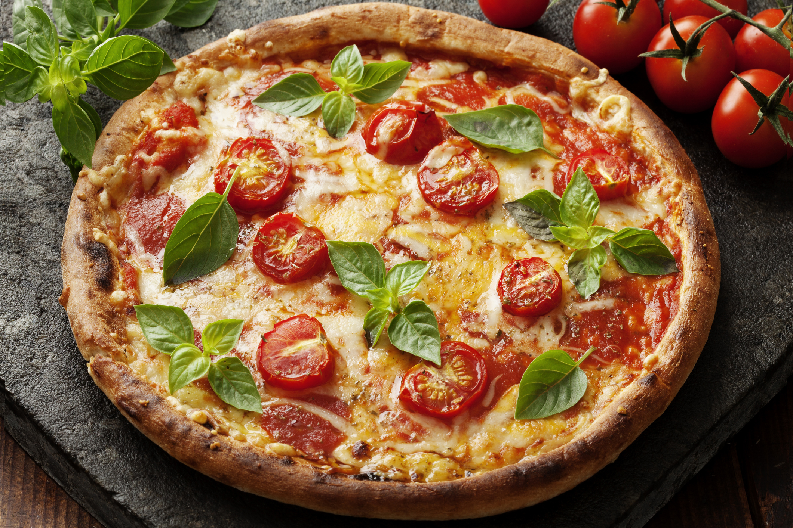

Pizza Margherita
Ingredientes:
- 1 massa de pizza pronta
- 200g de molho de tomate
- 200g de queijo mussarela
- Folhas de manjericão
- Azeite de oliva a gosto
Modo de Preparo:
Preaqueça o forno a 180°C. Espalhe o molho de tomate sobre a massa de pizza. Adicione o queijo mussarela e leve ao forno por 15-20 minutos ou até que o queijo esteja derretido e a massa crocante. Retire do forno e adicione as folhas de manjericão. Regue com azeite de oliva antes de servir.

Bolo de Chocolate Com Cobertura
Ingredientes:
- 2 xícaras de farinha de trigo
- 1 xícara de açúcar
- 1/2 xícara de cacau em pó
- 3 ovos
- 1/2 xícara de óleo
- 1 xícara de leite
- 1 colher de sopa de fermento em pó